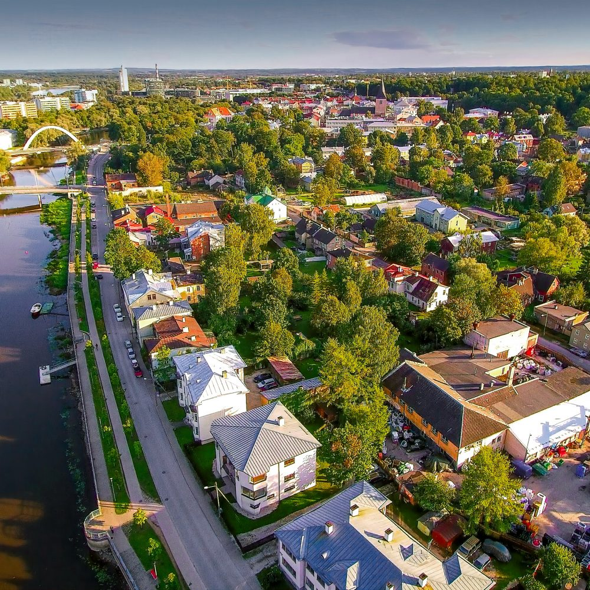

Tere tulemast Tartu meelelahutuse lehele! Sellel haridusliku eesmärgiga loodud lehel saate teada, kus Tartus iga päev ja iga kell pidutseda või sõprade (või võõrasetega) mõnusalt aega veeta Kuigi Tartu on oma elanike arvult ja eriti pindalalt väike, on siin küllaga tegevust kui ainult natuke seda otsida! Peaaegu igas linnas on kino ja/või teater, seega sellelt lehelt sarnaseid tavapärasemaid kohti ei leia, vaid näete, mida on tõepoolest ainult Tartus!
Otsid mida teha Tartus?
Oled õiges kohas.
Oled Tartust palju kuulnud, aga ikka ei tea mida seal päriselt teha saab? Ole mureta, sest see leht tutvustab sulle Tartu parimaid kohti igal kellajal lõbutsemiseks! Ainult enne kui alustame, ütle, kas sa otsid pigem head tegevust päevaks või hoopis vägevat ööelu?